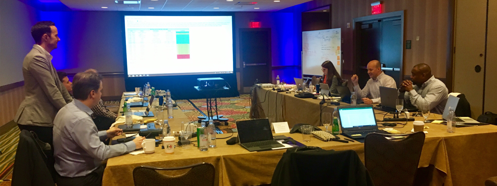
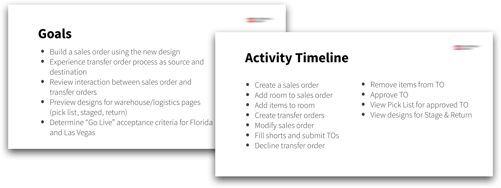
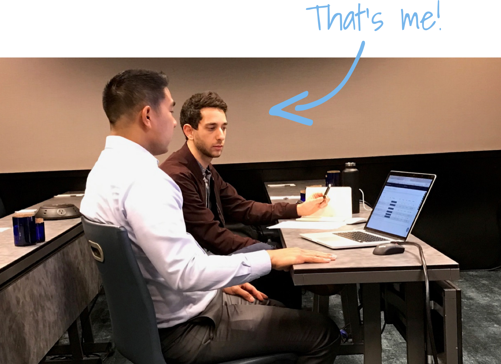

REDACTED [company name], the pension department of a major international HR consulting firm, is a leader in administering and managing pension plans for their client companies. They provide critical retirement services for their clients and their clients' employees as they navigate an often difficult and confusion retirement landscape.
REDACTED [company name] came to us with a very specific problem. Their current portal for pension employees did not provide the ability to submit relevant information and make election decisions to kick off their retirement. Employees had to mail paper forms back and forth to make their pension elections and could often take months to complete. Additionally, their competitors were using this as a way to steal business.
Below are some of the main features I designed for this client prototype, which ultimately won the business, based on the research and workshopping process.
A simple card based to do list style dashboard allows participants to complete the sections in a soft order and clearly follow their progress along the way.
When drilling into each section, full page overtake forms provide a focused experience for each major step in order to knock out one critical section at a time.
Initially, the company was skeptical to ramp up spending on a project many internally considered sunk. Understandably, too, management had many questions like:
It seems as though not only did we need the users to regain trust in the product, but we needed our stakeholders to get bought back into their vision for a unified custom software solution.
Before any research or testing efforts in business product design, it's always best to remember the golden rule:
The reality was our users had been burned before (some, many times) and were jaded and skeptical that a new product team could come in from the outside and fix their software. We knew we had to start having conversations with folks in the field immediately. It's not always easy to talk to your users, though – especially when they're spread out all over the continent, cost is a concern, and frankly, you haven't met any of them yet.
In order to employ the most cost effective but impactful strategy, we identified 3 main methods of research and testing that worked efficiently for this engagement:
Right away, our team began releasing incremental changes through the staging and production environments in a dual-track agile process, so we had an advantage from the beginning. We had the ability to get feedback from users on live designs.
This methodology is perfect for testing incremental changes in a staging environment with an intentionally selected group of users from different levels and regions of the business. It also empowers the selected response team because it makes users feel like an important voice in the building process.
I can't show you real client data so here's a stock photo of a business chart!
What I've learned from the UAT process, there's a few critical things that you need to make it an effective testing method:
While the best way to get feedback is from live features, the next best thing is working with people in person, in real time, in a simulated environment. What I mean by real time is instead of just showing some A/B concepts and having users pick what they like best (unreliable for this task based product), instead we assembled groups of users and asked them to complete tasks from start to finish as if they were really doing their job.
A pic of a group working session with a variety of different participants in Orlando
While this method is more time consuming and expensive, I would argue it's the most valuable for creating a shared understanding between designers and people who use your product.
Example slides from a recent group working session
As you can see from the slide examples above, this format works best to accomplish larger tasks that simulate a real work day. Taking breaks after chunks of tasks is important. Gathering feedback and having group discussions about what went well, what didn't, and how to move forward are the most valuable takeaways.
Additionally, taking a step away from the software and moving to sticky notes on a wall will always facilitate a better discussion and ensure the entire group has a shared understanding of next steps.

Me with with team prioritizing features after our working session
Some of my favorite sessions have come from this group format. It helps build rapport with your users and gets people in a room that may otherwise never interact or only interact via email. Remember, these sessions will produce valuable insights, but ultimately the simulation will not match a true live environment. Make sure to continue to test the features via UAT surveys that were simulated in these sessions once they are released. Most likely, for better or worse, you'll learn something new.
Finally, 1-on-1 sessions (both remote and in person) provide valuable information you may not be able to gather from UAT surveys and group sessions. These sessions are ideal for walking through tasks from start to finish and asking a lot of questions along the way. These are especially helpful when the participant speaks their thoughts aloud when completing the tasks.
You can see here, the in-person sessions are generally pretty casual
Providing a casual environment with no more than two interviewers in the room allows participants to open up and say what they really mean. Often, we designers forget that users may not be willing to be completely transparent with us if they don't think we're on their side - especially when we ask them to complain to us.
Usually, the most negative information is spilled in these direct 1-on-1 sessions. It's good to give users time to vent so they can see at least someone is listening, even it it doesn't feel like it.

Example script from a 1-on-1 session
It's advisable to follow a script here, especially since these interviews are best to gather targeted feedback on certain processes or new features. I've tested concept designs in tools like InVision as well as built features tested in a staging environment successfully.

I'll leave you with a pic of me listening.
Wow, you made it to the end of the case study. Hopefully you liked it. Step through the slideshow below to check out entire pension election workflow.

This welcome screen is the first screen participants will see, so it's informative and sensitive - reminding users of their help options during the process was important.

Prior to diving into the dashboard, asking for their prospective reitrement date brings personalization as well as verifies eligibility.

This is the main to do list dashboard. The card based layout with indicators on what can be completed now, allows for flexible screen sizes and provides a natual suggested workflow that isn't too restrictive. Prior to final submission, users will be taken to this as their homescreen upon returning.

Drilling into each section from the dashboard brings users to a full screen edit mode. This provides a focused experience, especially for retirees not comfortable with modern web applications, as they navigate the sections.

As participants complete the sections, they will see validation indicators along the way for which sections are completed and potentially, which sections need updated or additional information.

Time to make the main pension election decision.

After the necessary information and desicions are provided by the participant, they must sign some documents. The embeded document center allows for e-sign and physical uploads. Users will be able to review these documents after they submit, as well.

Once the dashboard is in this current all green state, the final Review and Submit step is unlocked and available.

After submitting their pension information and election decisions, participants can review their summary and processing status. This ends the online portion of the election process. Now, when users log in they will be taken to this read only summary page.